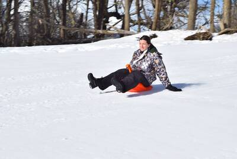
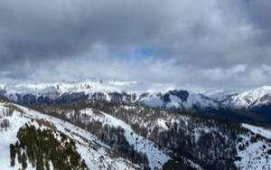
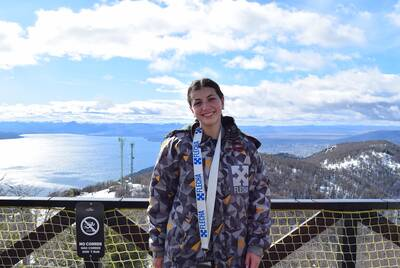
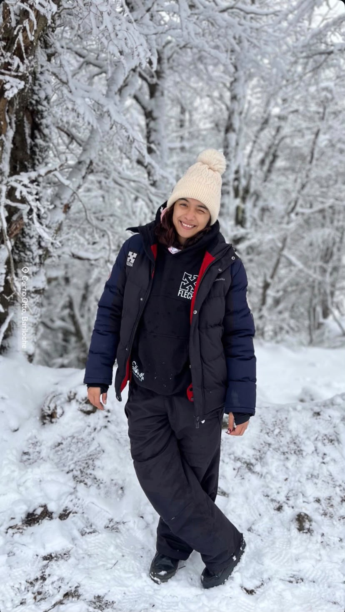
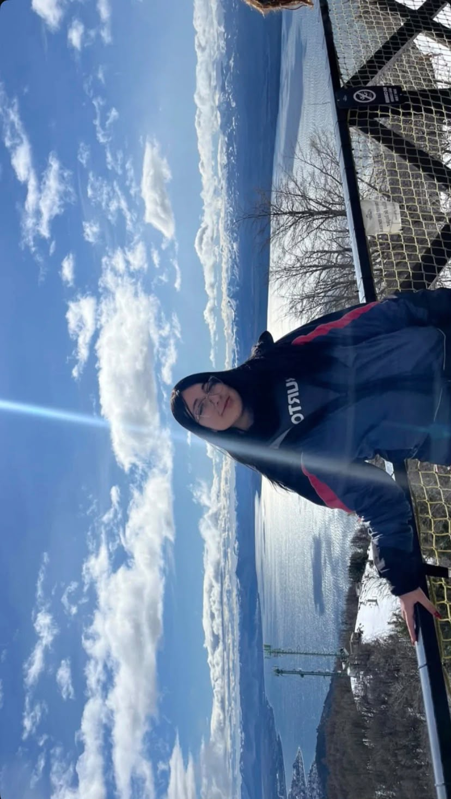
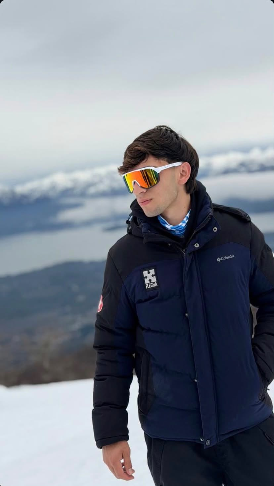
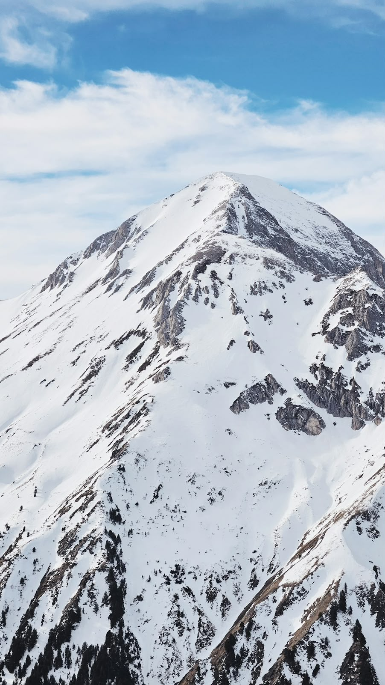
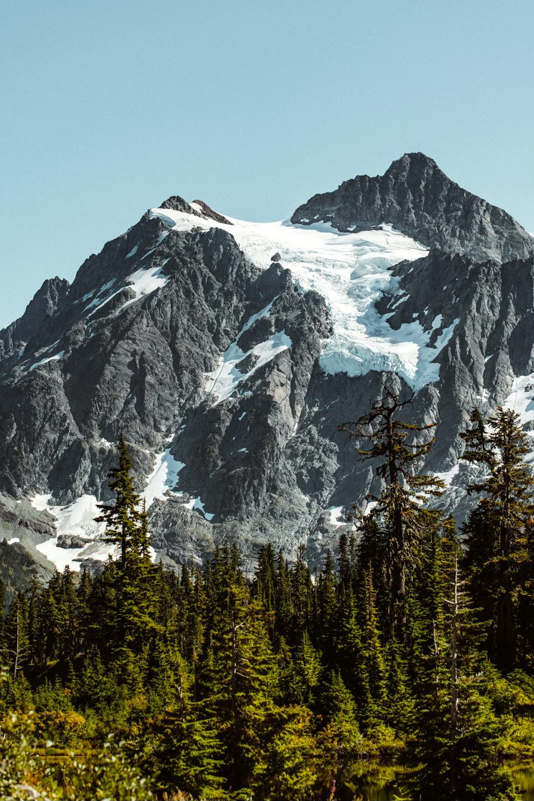
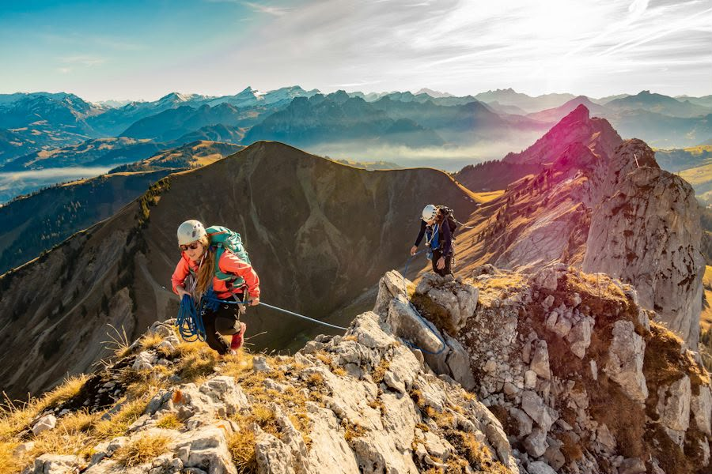
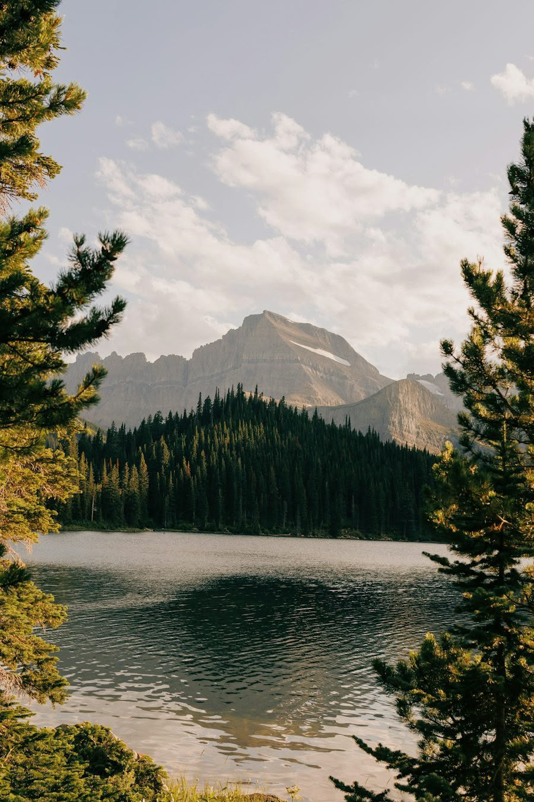

Sobre nosotros
Líderes de expedición
Flecha Turismo Estudiantil ofrece excursiones y actividades recreativas para que los estudiantes disfrutende experiencias grupales, conozcan nuevos lugares y compartan momentos con sus compañeros.
Sus propuestas pueden incluir paseos turísticos, actividades al aire libre, juegos, fiestas y visitas a distintos
atractivos del destino, combinando diversión, aventura y convivencia.

Expediciones
Las expediciones incluyen recorridos por distintos lugares y espacios naturales. Ofrecemos caminatas, exploraciones y actividades de aventura.
Lugares
Flecha visita distintos destinos turísticos de Argentina y otros lugares. Entre ellos se encuentran ciudades, paisajes naturales, montañas y zonas costeras.
Fotografía
Contamos con fotógrafos que acompañan a los turistas durante el viaje,estos se encargan de capturar los momentos más importantes y divertidos.



Nuestros líderes
Estas personas son Juli 420, Rochi la rocha y Segu pelado,
nuestros coordinadores.
En cada viaje, los coordinadores
acompañan a los turistas y se encargan de que cada
actividad
se desarrolle de manera organizada y segura. Están presentes
durante las excursiones,
juegos y momentos de recreación,
ayudando a que todos puedan disfrutar de la experiencia.
Además, buscan generar un buen ambiente dentro
del grupo, fomentando el compañerismo y la participación. Su
acompañamiento hace que cada viaje sea más divertido, organizado y
especial.




________________
Contáctanos
Flecha Turismo Estudiantil emplea un pequeño número de líderes de
expedición
altamente experimentados para dirigir nuestros
viajes. Son elegidos cuidadosamente
por su experiencia, sus
cualificaciones y su capacidad para afrontar los desafíos que
presentan estas exigentes expediciones.
Movil: 9 2243 40-1637
Oficina: 11 4393-0444
Correo electrónico: atencionclientes@flechaturismoestudiantil.com.ar